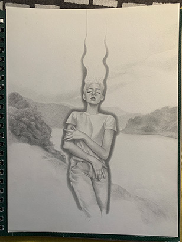
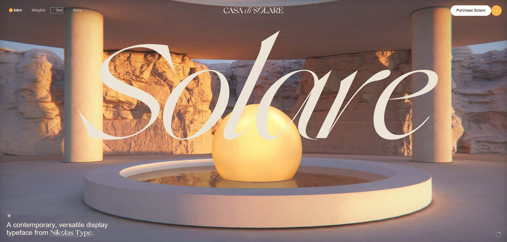
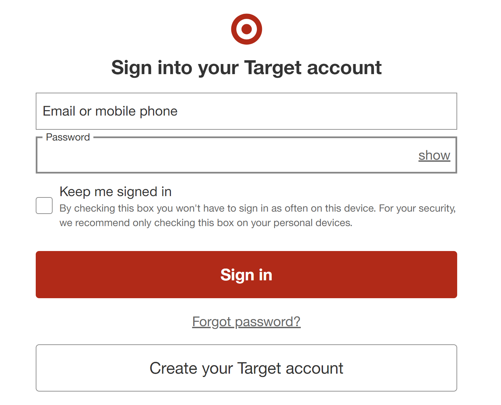

This is a nanoblock of Groudon, a Pokémon. For those who don’t know, nanoblocks are essentially mini legos. This image is interesting because from farther away, it looks like Groudon is composed of pixels. I had chosen this image because I personally love making these nanoblocks whenever I can find one I don’t have yet. I’m a very hands-on person, so I love doing little crafts or building things as a hobby. I have a collection of a bunch of Pokémon nanoblocks back in my hometown and at my apartment in Davis. I’ve grown up with Pokémon, so these little collections reflect my childhood and even my present since I still love Pokémon even now. Even as a kid, I was obsessed with Pokémon, watching some movies multiple times and begging my parents for a game or some of the trading cards.

Megan Hooper, 2024
This particular image is a drawing done by Meg a while back. I found it so interesting to look at it, because while it is monochromatic, there are definitely some emotions felt through this drawing. The detail in the bushes in the back, the features of the person, and the clothes is beautiful. All of the strokes and details are all very soft, which makes it so much more interesting to look at. The pose of the person also makes me question what the background for this drawing was. And what led her to draw this person in this way. The person also seems to be surrounded in energy, with wisps of it reaching to the top of the page. Overall, it’s just a really fascinating work of art and I’m curious to learn more about it.
Entry 3 - Visual Thinking Strategies Research

The article, “10 Intriguing Photographs to Teach Close Reading and Visual Thinking Skills” written by Michael Gonchar essentially talks about ways to learn more close reading and visual thinking skills. One thing that really resonated with me is when Gonchar said how reading any text requires us to be slower, attempting to make connections and noticing details, but that’s only if we want to read the text. Being a visual learner, I despise reading articles that have no visuals and are straight text. I lose my focus rapidly when this happens and it takes me a couple of attempts to finish reading something. Gonchar also mentions how younger people want to hurry and understand someone with just a quick skim or look, and text can demand a lot of focus and patience. This is something that I struggle with as well, when encountering a long text, I always try to just quickly skim through it, while barely reading the text. And this is what makes visuals so important, with visuals, I am able to quickly gain focus and become more curious about the topic.
A website I found that is extremely visually appealing is Casa di Solare’s website. This website is a site where users are encouraged to buy their type, Solare. From the get-go, I am already hooked on the website. There are so many instances of user interaction with the website that it makes it so beautiful and interesting to see. From adjusting the font size, weight, and intensity, to just scrolling through and being amazed to see what they have on the site. They don’t have a scrollbar, but it is completely okay since I feel like having a scrollbar would actually take away from the experience. Everything on the site blends seamlessly, which is so interesting to see. I spent such a long time just scrolling up and down just watching the animations change. The text also becomes a lot more interesting, as so much of the site is all visual. Sometimes, moving the mouse around on an image would adjust it as well, which was so fascinating.
Entry 2 - Overlays Design Pattern Research
I read Naema Baskanderi’s article, “Best Practices for Modals/Overlays/Dialog Windows.” After reading the article, I learned a lot about how to make a “perfect” modal window. Before reading the article, I was first thrown off by why she had introduced this concept of a modal window because I personally found pop-ups really annoying, but she gave me a new insight and view about having them pop up on users’ windows and screens. Being able to capture users’ attention for a brief moment for something important is very important, making sure the users will fill out some needed information or double checking before they try to delete something. Baskanderi gives detailed information about the “perfect” modal window to ensure task completion, which was really interesting to see. She provided all the information about what a proper modal window needs to be accessible for different users and for it to be less confusing for users, which was all useful information for when I need to make a modal window in the future.
Entry 1 - Research Form Design

While reading the article “Best practices for form design” I realized that while setting up passwords for websites, it is sometimes gimmicky. The article mentioned how if a password requires special letters and formatting, to explain the formatting through “support text.” After looking at the image, I realized that if I saw that type of support text while signing up on websites, it’d make the experience a lot better and simpler. Having requirements in bullet points spaced further apart, made it a lot easier to read and understand. Whereas sometimes while I am signing up for accounts on websites, I want to get it over as soon as possible, so I would rush the passwords without fully reading the requirements they need for a password if it’s in a long sentence or paragraph. And then, when I submitted the password, they would send me back with an error message since I didn’t have what they needed. But if a lot more websites were to adopt the way Ansari had formatted the text, it would be a lot simpler and make it a lot easier and faster to sign up.
A website I have recently interacted with is Target. Target has really good form practices due to its contrast, hierarchy, and labels. The contrast in the website is good since the buttons are all red with white text, allowing their users to be able to read the text clearly. The hierarchy and labels within the website are great as well, the hierarchy while checking out makes it easier for users to go in order and know what to do; whereas the label are inline labels, but once users tap or click into it, it jumps up to right above to let users know what to fill in the label in case they had forgotten. One fascinating thing I realized with Target is that whereas people avoid the red buttons in all websites and apps, for Target, people automatically gravitate towards the red buttons.